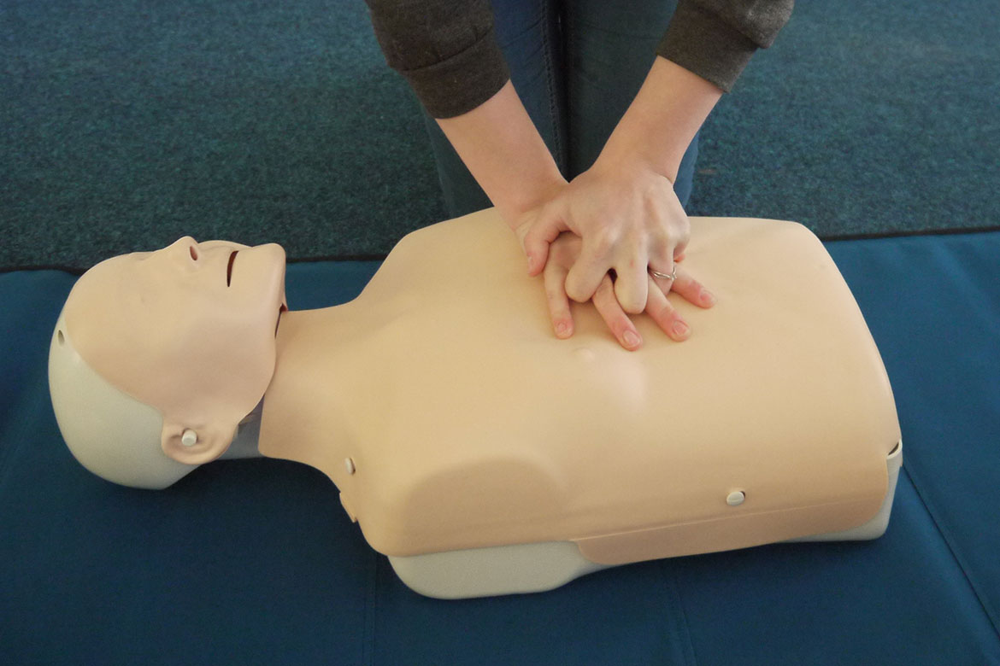

При оказании первой помощи необходимо:
-
Вынести пострадавшего из места происшествия и приостановить дальнейшее воздействие травмирующего фактора;
-
Обработать поврежденные участки тела и остановить кровотечение;
-
Провести иммобилизацию при переломах, обширных повреждениях мягких тканей и предотвратить травматический шок;
-
Обеспечить транспортировку или доставить пострадавшего в лечебное учреждение.
При оказании первой помощи следует работать быстро, обдуманно, решительно и спокойно.
Первая помощь при переломах
При переломах, вывихах, растяжении связок и других травмах пострадавший испытывает острую боль, резко усиливающуюся при попытке изменить положение поврежденной части тела. Иногда сразу бросается в глаза неестественное положение конечности и искривление
ее (при переломе) в необычном месте. Самым главным моментом в оказании первой помощи как при открытом переломе (после остановки кровотечения и наложения стерильной повязки), так и при закрытом является иммобилизация (создание
покоя) поврежденной конечности. Это значительно уменьшает боль и предотвращает дальнейшее смещение костных отломков. Для иммобилизации используются готовые шины, а также палка, доска, линейка, кусок фанеры и т. п. При закрытом
переломе не следует снимать с пострадавшего одежду - шину нужно накладывать поверх нее. К месту травмы необходимо прикладывать "холод" (резиновый пузырь со льдом, снегом, холодной водой, холодные примочки и т. п.) для уменьшения
боли.
Искусственное дыхание
Для проведения искусственного дыхания пострадавшего следует уложить на спину, расстегнуть стесняющую дыхание одежду. Прежде чем начать искусственное дыхание, необходимо в первую очередь обеспечить проходимость верхних дыхательных путей, которые в положении
на спине при бессознательном состоянии всегда закрыты запавшим языком. Кроме того, в полости рта может находиться инородное содержимое (рвотные массы, соскользнувшие протезы, песок, ил, трава, если человек тонул, т.д.) которое
необходимо удалить пальцем, обернутым платком (тканью) или бинтом. После этого оказывающий помощь располагается сбоку от головы пострадавшего, одну руку подсовывает под шею пострадавшего, а ладонью другой руки надавливает на его
лоб, максимально запрокидывая голову. При этом корень языка поднимается и освобождает вход в гортань, рот пострадавшего открывается. Оказывающий помощь наклоняется к лицу пострадавшего, делает глубокий вдох открытым ртом, полностью
плотно охватывает губами открытый рот пострадавшего и делает энергичный выдох, с некоторым усилием вдувая воздух в его рот одновременно он закрывает нос пострадавшего щекой или пальцами руки, находящейся на лбу. При этом обязательно
надо наблюдать за грудной клеткой пострадавшего, которая поднимается. Как только грудная клетка поднялась, нагнетание воздуха приостанавливают, оказывающий помощь поворачивает лицо в сторону, происходит пассивный выдох у пострадавшего.

Если у пострадавшего хорошо определяется пульс и необходимо только искусственное дыхание, то интервал между искусственными вдохами должен составлять 5с (12 дыхательных циклов в минуту). Кроме расширения грудной клетки показателем эффективности искусственного
дыхания может служить порозовение кожных покровов и слизистых также выход больного из бессознательного состояния и появление у него самостоятельного дыхания. Если челюсти пострадавшего плотно стиснуты и открыть рот не удается,
следует проводить искусственное дыхание "изо рта в нос". Маленьким детям вдувают воздух одновременно в рот и в нос, охватывая своим ртом и нос ребенка. Чем меньше ребенок, тем меньше ему нужно воздуха для вдоха и тем чаще следует
производить вдувание по сравнению со взрослым человеком (до 5-18 раз в минуту). Поэтому вдувание должно быть неполным и менее резким, чтобы не повредить дыхательные пути пострадавшего. Прекращают искусственное дыхание после восстановления
у пострадавшего достаточно глубокого и ритмичного самостоятельного дыхания. В случае отсутствия не только дыхания, но и пульса на сонной артерии делают подряд два искусственных вдоха и приступают к наружному массажу сердца.
Первая помощь при кровотечениях
Кровотечения, при которых кровь вытекает из раны или естественных отверстий тела наружу, принято называть наружными. Кровотечения, при которых кровь скапливается в полостях тела, называются внутренними. Среди наружных кровотечений чаще всего наблюдаются
кровотечения из ран, а именно: Капиллярное - при поверхностных ранах, при этом кровь из раны вытекает по каплям; венозное - при более глубоких ранах, например резаных, колотых, происходит обильное вытекание крови темно-красного
цвета; артериальное - при глубоких рубленых, колотых ранах артериальная кровь ярко-красного цвета бьет струей из поврежденных артерий, которых она находится под большим давлением; смешанное - в тех случаях, когда в ране кровоточат
одновременно вены и артерии, чаще всего такое кровотечение наблюдается и при глубоких ранах.
Артериальное кровотечение наиболее опасное. При этом ярко-красная кровь изливается пульсирующей струей в такт с сокращениями сердечной мышцы. Скорость кровотечения при ранении крупного артериального сосуда (сонной, плечевой, бедерной артерии, аорта) такова,
что буквально в течение нескольких минут может произойти потеря крови, угрожающая жизни пострадавшего. Если кровоточит небольшой сосуд, достаточно лишь наложить давящую повязку. Чтобы остановить кровотечение из крупной артерии,
следует прибегнуть к наиболее надежному способу - наложить кровоостанавливающий жгут. При его отсутствии для этой цели можно использовать подручные средства - поясной ремень, резиновую трубку, прочную веревку, кусок плотной материи.
Жгут накладывают на плечо, предплечье, голень или бедро, обязательно выше места кровотечение. Чтобы он не ущемлял кожу, под него нужно подложить какую-либо материю или наложить жгут поверх одежды, расправив ее складки. Обычно делают
2-3 оборота жгута вокруг конечности и затем затягивают его до тех пор, пока кровотечение не остановится. Если жгут наложен правильно, то пульсация сосуда ниже его не определяется. Однако нельзя чрезмерно сильно затягивать жгут,
так как можно повредить мышцу, пережать нервы, а это грозит параличом конечности и даже ее омертвением.
Жгут необходимо оставлять на срок не более полутора - двух часов в теплое время года, а и холодное - не более чем на час! При более длительном сроке есть опасность омертвения тканей. Поэтому для контроля времени необходимо подложить под жгут либо прикрепить
к одежде рядом с ним записку, указав дату и точное время наложения жгута в 24-часовом исчислении. Если необходимо оставить жгут дольше указанного срока, следует прижать сосуд пальцем выше места повреждения, снять жгут на 10-15
мин, затем вновь наложить чуть ниже или выше.
Для быстрой остановки кровотечения можно прижать артерии в обычных местах, выше места повреждения. После остановки артериального кровотечение необходимо как можно быстрее доставить пострадавшего в лечебное учреждение.
Венозное кровотечение значительно менее интенсивное, чем артериальное. Из поврежденных вен темная, вишневого цвета кровь вытекает равномерной непрерывной струей. Остановка венозного кровотечения надежно осуществляется при помощи давящей повязки, для чего
поверх раны, прикрытой бинтом или чистой тканью, накладывают несколько слоев марли или комок ваты и плотно забинтовывают.
Капиллярное кровотечение возникает из-за повреждения мелких кровеносных сосудов (капилляров) при обширных ссадинах, поверхностных ранах. Кровь вытекает медленно, по каплям, и, если свертываемость ее нормальная кровотечение прекращается самостоятельно.
Капиллярное кровотечение легко остановить с помощью обычной стерильной повязки. Поверх повязки на область травмы рекомендуется положить пузырь со льдом.
Первая помощь при отравлении угарным газом
Отравление угарным газом (окись углерода - СО) возможно в гаражах при плохой вентиляции, в непроветриваемых вновь окрашенных помещениях, а также в домашних условиях - при несвоевременном закрытии печных заслонов в помещениях с печным
отоплением. Ранние симптомы отравления - головная боль, тяжесть в голове, тошнота, головокружение, шум в ушах, сердцебиение. Несколько позже появляются мышечная слабость, рвота. При дальнейшем пребывании в отравленной атмосфере
слабость нарастает, возникает сонливость, затемнение сознания, одышка. У пострадавших в этот период отмечается бледность кожных покровов, иногда наличие ярко-красных, пятен на теле. При дальнейшем вдыхании угарного газа дыхание
становится прерывистым, возникают судороги, и наступает смерть от паралича центра дыхания.

Первая помощь заключается в немедленном удалении отравившегося из данного помещения. В теплое время года его лучше вынести на улицу. При слабом поверхностном дыхании или прекращении его необходимо начать искусственное дыхание, которое,
следует проводить до появления самостоятельного адекватного дыхания или появления явных признаков биологической смерти. Способствуют ликвидации последствий отравления растирание тела, прикладывание грелки к ногам, кратковременное
вдыхание паров нашатырного спирта. Больные с тяжелыми отравлениями подлежат госпитализации, так как возможно развитие тяжелых осложнений со стороны легких и нервной системы в более позднем периоде.
Термические ожоги
Первая помощь долина быть направлена на прекращение воздействия высокой температуры на пострадавшего: следует потушить пламя на одежде, удалить пострадавшего из зоны высокой температуры, снять с поверхности тела тлеющую и резко нагретую одежду. Вынос
пострадавшего из опасной зоны, тушение тлеющей и горящей одежды необходимо осуществлять осторожно, чтобы грубыми движениями не нарушить целостность кожных покровов. Для оказания первой помощи одежду лучше разрезать, особенно там,
где она прилипает к ожоговой поверхности. Отрывать одежду от кожи нельзя; ее обрезают вокруг ожога и накладывают асептическую повязку поверх оставшейся части одежды. Раздевать пострадавшего не рекомендуется, особенно в холодный
период года, так как охлаждение резко усилит общее влияние травмы на организм и будет способствовать развитию шока.
Следующей задачей первой помощи будет скорейшее наложение сухой асептической повязки для предупреждения инфицирования ожоговой поверхности. Для повязки желательно использовать стерильный бинт или индивидуальный пакет. При отсутствии специального стерильного
перевязочного материала ожоговую поверхность можно закрыть хлопчатобумажной тканью, проглаженной горячим утюгом или смоченной этиловым спиртом, раствором этакридина лактата (риванол) либо перманганата калия. Такие повязки несколько
уменьшают боль.
Всякие дополнительные повреждения и загрязнения ожоговой поверхности опасны для пострадавшего. Поэтому не следует производить какие-либо промывания ожоговой поверхности, прикасаться к обожженному месту руками, производить прокалывание пузырей, отрывать
прилипшие к местам ожога части одежды, а также смазывать ожоговую поверхность жиром, вазелином, животным или растительным маслом и присыпать порошком. Нанесенный жир (порошок) не уменьшает боль и не способствует заживлению, но
облегчает проникновение инфекции, что особенно опасно, резко затрудняет оказание врачебной помощи.